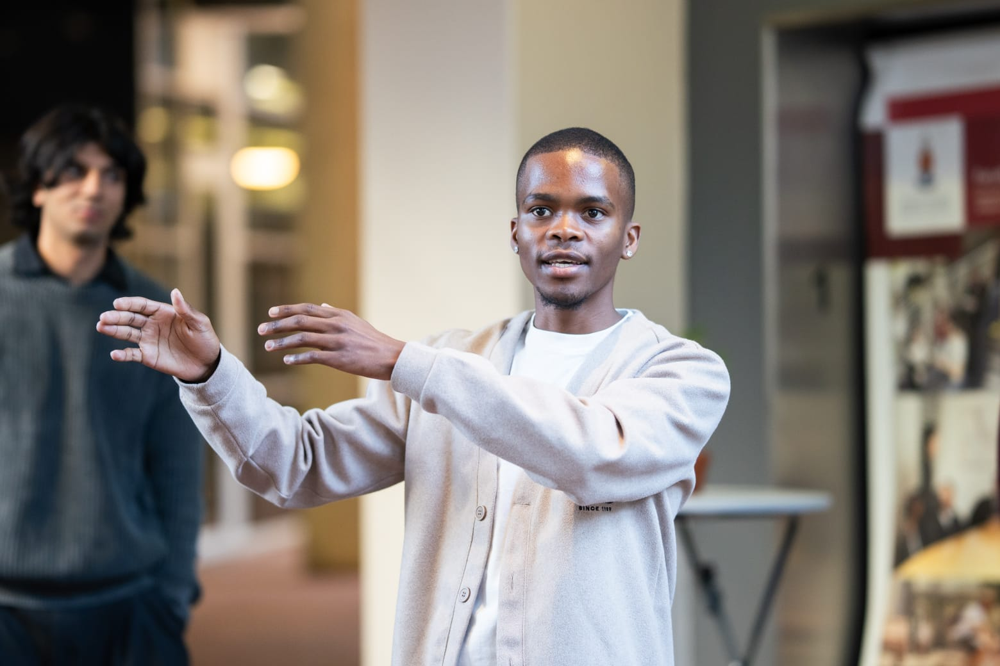
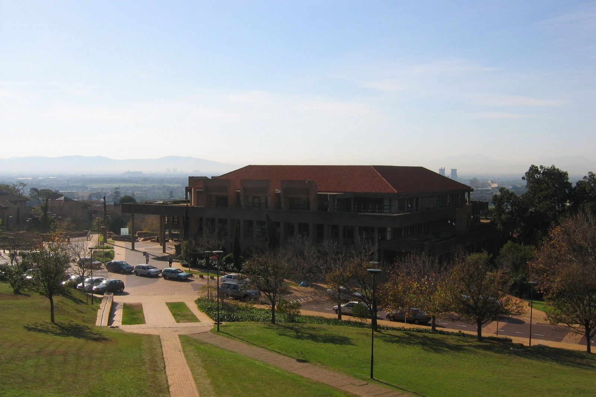
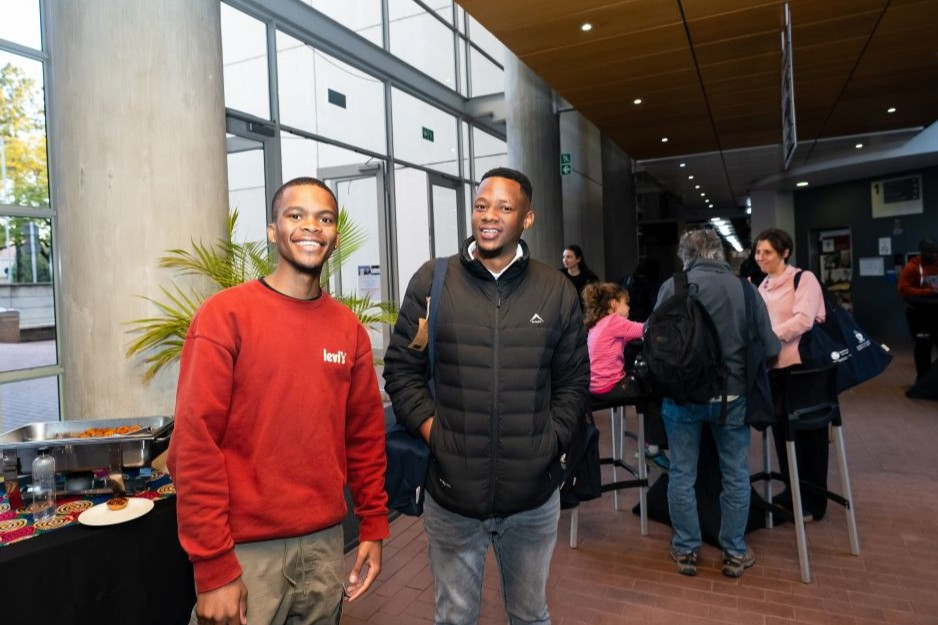

Sandiso Mahlangu
For Law Students' Council President
"Building a Law Faculty where opportunity belongs to every student."
Law student, mentor, volunteer and student leader committed to ensuring that no student is left behind because of financial hardship, limited career opportunities or lack of meaningful engagement.
- Years in student advocacy
- 6Leadership roles
- Students surveyed this term
- 2026Law faculty mentor
- Policies passed as Faculty Rep
- 3Years of student leadership
About me
Student Leader. Mentor. Advocate.

Throughout my time at UCT I have dedicated myself to leadership, community service and student development. From mentoring students, volunteering with SHAWCO Law to representing student organisations, every role has reinforced one belief: student leadership should create opportunities that improve the lives of every law student.
Vision
Three Priorities.
My campaign is built around three practical priorities that address some of the biggest challenges UCT Law students face: financial accessibility, career development and meaningful student engagement.
Kramer Student Fund

Ensuring that no UCT Law student is forced to leave university because of financial constraints.
Alternative Career Day
Connecting students with legal careers beyond traditional practice and expanding employment opportunities.
Inkulumo Yabafundi

Creating a platform where students, academics and legal professionals can openly discuss the law and issues affecting our society.
Manifesto
Building a Stronger, Inclusive Law Faculty
My manifesto outlines three practical initiatives that I will champion as Law Students' Council President. Together, they aim to make legal education more accessible, prepare students for diverse career opportunities, and create spaces where every student can participate, contribute and be heard.
-
Kramer Student Fund
A student-led fund ensuring that no UCT Law student is forced to leave university because of financial hardship.
-
Alternative Career Day
Expanding career opportunities by exposing students to the many paths available with an LLB beyond traditional legal practice.
-
Inkulumo Yabafundi
A forum where students, academics and legal professionals come together to discuss law beyond the classroom.
Get Involved
Let's Build a Better Law Faculty Together
Whether you have an idea, concern, question or simply want to support the campaign, I'd love to hear from you. Every conversation helps us build a stronger, more inclusive UCT Law community.
Louder students. Stronger campus.
Vote Sandiso Mahlangu for Law Students' Council President.